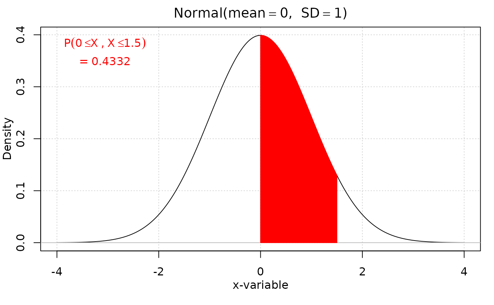
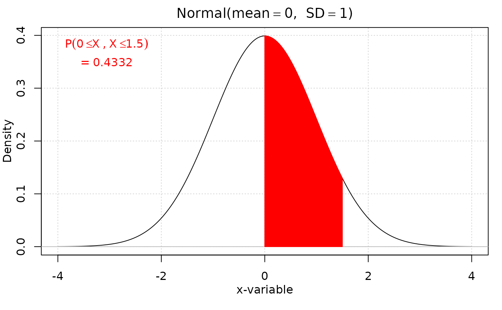

normprob finds a p-value and plots it onto a normal distribution with mean
and standard deviation as specified. The function can find the probability
above, below, between, or outside of the observed value, as specified by
directions.
Usage
iscamnormprob(
xval,
mean = 0,
sd = 1,
direction,
label = NULL,
xval2 = NULL,
digits = 4,
verbose = TRUE
)Arguments
- xval
observed value.
- mean
mean of normal distribution.
- sd
standard deviation of normal distribution.
- direction
direction for probability calculation, "above" or "below"; if "outside" or "between" are used, a second larger observation,
xval2must be specified- label
horizontal axis label.
- xval2
second observation value.
- digits
number of digits to display.
- verbose
Logical, defaults to
TRUE. Set toFALSEto suppress messages
Value
a p-value and a plot of the normal distribution with shaded area representing probability of the observed value or more extreme occurring.
Examples
iscamnormprob(1.96, direction = "above")
 #> probability: 0.025
#> Warning: "scipen" is not a graphical parameter
#> Warning: "digits" is not a graphical parameter
#> [1] "0.025"
iscamnormprob(-1.5, mean = 1, sd = 2, direction = "below")
#> probability: 0.1056
#> Warning: "scipen" is not a graphical parameter
#> Warning: "digits" is not a graphical parameter
#> [1] "0.1056"
iscamnormprob(0, xval2 = 1.5, direction = "between")

#> probability: 0.4332
#> Warning: "scipen" is not a graphical parameter
#> Warning: "digits" is not a graphical parameter
#> [1] "0.4332"
iscamnormprob(-1, xval2 = 1, direction = "outside")
#> probability: 0.3173
#> Warning: "scipen" is not a graphical parameter
#> Warning: "digits" is not a graphical parameter
#> [1] "0.3173"
#> probability: 0.025
#> Warning: "scipen" is not a graphical parameter
#> Warning: "digits" is not a graphical parameter
#> [1] "0.025"
iscamnormprob(-1.5, mean = 1, sd = 2, direction = "below")
#> probability: 0.1056
#> Warning: "scipen" is not a graphical parameter
#> Warning: "digits" is not a graphical parameter
#> [1] "0.1056"
iscamnormprob(0, xval2 = 1.5, direction = "between")

#> probability: 0.4332
#> Warning: "scipen" is not a graphical parameter
#> Warning: "digits" is not a graphical parameter
#> [1] "0.4332"
iscamnormprob(-1, xval2 = 1, direction = "outside")
#> probability: 0.3173
#> Warning: "scipen" is not a graphical parameter
#> Warning: "digits" is not a graphical parameter
#> [1] "0.3173"